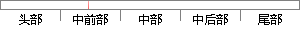

这里的时间管理功能主要用于系统的时间节拍，可以用来对任务进行延时，也可用来获取系统运行的总节拍数。
片段位置图

相似结果
相似片段：该RTC主要功能包括: 时间节拍发生器,达到毫秒级精度...任务控制块,以判断任务是否延时计满,或者进行一些...嵌入式系统的时间管理 S3C44B0X的锁相环 S3C44B0X的...
| 标题 | 《第15讲_第7章时间管理 61页 - 豆丁网》 |
| 对比库 | PaperRater云论文库 |
| 网址 | http://www.docin.com/p-408582567.html |
| 相似率 | 63.16% （轻度抄袭） |
※ 片段修改建议 ※
近似词参考：- 主要：首要 重要
- 系统：体系
- 任务：使命 义务
- 进行：举行
- 获取：获得
- 时间：时候
- 节拍：节奏
- 功能：功效
系统自动生成语句：这里的时候管理功效首要用于体系的时候节奏，可以用来对使命举行延时，也可用来获得体系运行的总节奏数。
注：本片段修改建议为系统自动生成，仅供参考。